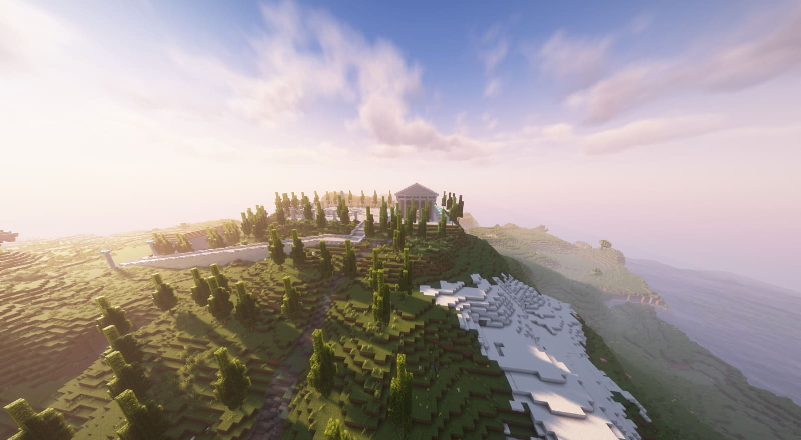

I believe gaming can be a fantastic way to relax and take a break from everyday life. It offers a chance to immerse yourself in different worlds, develop new skills, and connect with friends. Over the years, gaming has become more than just a hobby for me—it’s been a way to learn, explore, and grow. Here’s a look at my journey through some of my favorite games, each bringing its own unique experience and set of memories.
Write down your experiences: Gaming is not just a pastime—it's a way to unwind, discover new skills, and build connections. Reflecting on my favorite games, I find they each offer unique lessons, memorable moments, and personal growth. From strategic battles to creative building, every game challenges and rewards in different ways.
Minecraft has been the perfect game to let my creativity run wild. The freedom to create and build anything I wanted has kept me coming back to it time and again. Whether it’s crafting intricate structures or exploring vast landscapes, *Minecraft* has always given me the chance to turn my ideas into reality.
In Fortnite, I’ve always enjoyed playing with friends and taking on the challenges together. One of my favorite parts has been completing missions to unlock more skins and items—each mission felt like an achievement. That's probably why I have an impressive collection of 250 skins in *Fortnite*! The combination of teamwork and the drive to unlock more rewards has made it a game I truly enjoy.
Gaming has also allowed me to connect with others from around the world, fostering a sense of belonging and teamwork. Multiplayer games, especially with friends, have helped me develop skills in cooperation and communication. I believe that, in many ways, gaming helps bridge gaps and build friendships.
Looking back on favorite gaming moments: I often reminisce about past achievements, challenges, and the countless hours spent honing my skills. Each game has left an impact on me, shaping not only how I play but also how I approach real-world challenges. Gaming has taught me patience, persistence, and the value of continuous learning.
For me, gaming is also a way to relax and unwind, providing a break from the demands of daily life. The immersive worlds, engaging storylines, and sense of accomplishment each game brings make it a truly enriching experience. I look forward to continuing this journey, discovering new games, and creating even more memorable moments.

Playing Roblox was all about creativity and teamwork. From building games to playing with friends, it showed me how gaming can be a social experience that fosters creativity.
Fortnite taught me about strategic thinking and quick reflexes. The excitement of the Battle Royale mode and building structures kept me engaged and on my toes.
Minecraft is a game I keep coming back to for its endless creativity. From building complex structures to exploring new biomes, it’s a game that evolves with me.
COD taught me the importance of teamwork and tactics. Each match felt like an intense experience that required communication and coordination with teammates.
Terraria offered a mix of exploration and survival that kept me on edge. From battling bosses to crafting items, it was an unforgettable experience.